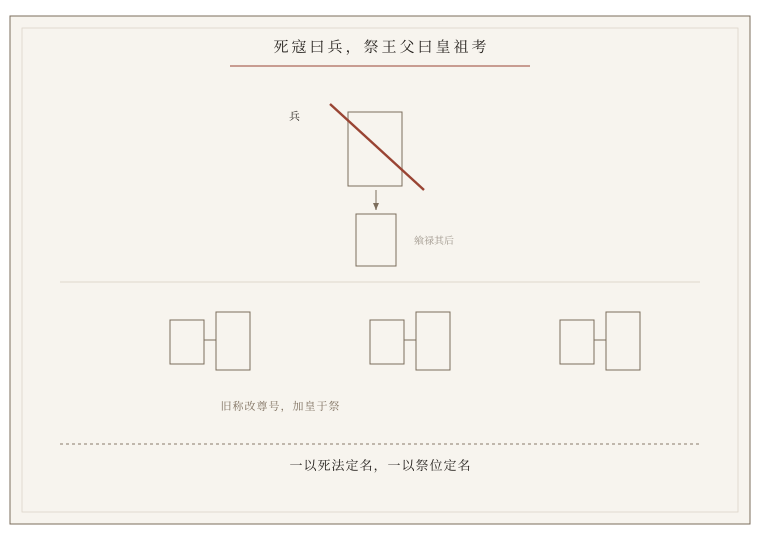

曲礼下 · 二·七十三 · 第 196 课
死寇曰兵，祭王父曰皇祖考，王母曰皇祖妣，父曰皇考，母曰皇妣，夫曰皇辟。注「异于凡人，当飨禄其后」「更设称号，尊神异于人也」。
说什么事：两种改名——死于国难者称兵，祭祖考者加皇。
落在哪一层：礼，兼及礼意。一为褒，一为尊。
为何编在此位：上节论物之死名，此节转人之死名与祭之称。由物返人。
【经】死寇曰「兵」。祭王父曰「皇祖考」，王母曰「皇祖妣」，父曰「皇考」，母曰「皇妣」，夫曰「皇辟」。
【注】異於凡人，當饗祿其後。更設稱號，尊神異於人也。皇，君也。考，成也，言其德行之成也。妣之言媲也，媲於考也。辟，法也，妻所取法也。
【疏】「死寇曰兵」，谓父祖死君之寇，而子孙为名也，言人能为国家捍难御侮，为寇所杀者，谓为兵。兵，器仗之名，言其为器仗之用也。故君恒禄恤其子孙，异于凡人也，故郑云「当飨禄其后，春飨孤子」是也。「祭王父曰皇祖考」，王父，祖父也，皇，君也，考，成也，此言祖有君德已成之也。「王母曰皇祖妣」，妣，媲也，言得媲匹于祖也。「父曰皇考，母曰皇妣」，义如上祖父母也。「夫曰皇辟」，辟，法也，夫是妻所取法，如君，故言君法也。
死寇 为寇所杀。
兵 器仗之名。死于器仗者，即以器仗名之。
飨禄其后 飨，给养。春飨孤子。
皇 君也。加于祖考父之上。
考、妣 考，成；妣，媲。
辟 法。妻所取法。
被寇贼杀死的人称「兵」。祭祖父称「皇祖考」，祖母称「皇祖妣」，父称「皇考」，母称「皇妣」，夫称「皇辟」。
一节两事，都是改名。前一事把人改称为他所执的器仗，后一事把死者改称为君。前者以死法定其名，后者以祭位定其名。
第一层 以器名死 疏「兵，器仗之名，言其为器仗之用也」。死于兵刃的人，就用兵刃来称他。这是最冷的一种命名，也是最直的一种褒奖。
第二层 飨禄其后 注「当飨禄其后」。名之后有实：君要长期抚恤其子孙。褒奖若只给一个称谓，礼就不成其为礼。
第三层 皇之为君 注「皇，君也」。祭时加「皇」于祖考父母，是把家内的亲长，临时放到君的位置上。祭毕仍称父，此号只在祭时用。
第四层 考妣辟三训 考，成；妣，媲；辟，法。三个字都在说「他对我成了什么」：祖父成了德，祖母与祖相匹，夫为妻所法。命名不是描述其人，是描述其在人伦中的位置。
与今日何干 烈士、功臣、先考、亡妻——称呼一变，关系就重新排了一次。
| 左 | 右 |
|---|---|
| 死寇曰兵 | 为器仗所用而死 |
| 飨禄其后 | 名后有实 |
| 王父曰皇祖考 | 皇，君也；考，成也 |
| 王母曰皇祖妣 | 妣，媲于考 |
| 夫曰皇辟 | 辟，法，妻所取法 |
| 更设称号 | 尊神，异于人 |
画上下两段。上段：一枚竖立的方牌，牌面被一道自左上向右下的粗斜线贯穿（示「兵」之器仗）；牌下另置一枚较小的方牌，两牌之间画一道向下的虚线箭头（示「飨禄其后」）。下段：三对并立的方牌，每对左牌明显矮于右牌，两牌之间以一道短横相连（示旧称改尊号）；三对等距横排。两段之间以一条浅色横线相隔。不写文字、不画人。赭色只用在贯穿上段方牌的那道斜线。
